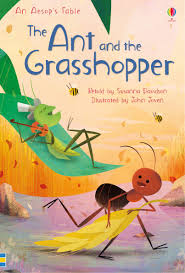

Once upon a time, in a sunny meadow, there lived an ant and a grasshopper. The ant was hardworking and spent all day gathering food for the winter, while the grasshopper preferred to sing and dance, enjoying the warmth of the sun.
As the days grew colder, the ant diligently stored away food in its burrow, preparing for the harsh winter ahead. Meanwhile, the grasshopper continued to frolic in the meadow, oblivious to the changing seasons.
When winter arrived, the meadow was covered in a blanket of snow, and food became scarce. The ant stayed warm and well-fed in its cozy burrow, while the grasshopper shivered in the cold, with nothing to eat.
In desperation, the grasshopper approached the ant and begged for food. But the ant shook its head and said, "I'm sorry, but I cannot spare any food for you. You should have worked hard and prepared like I did."
